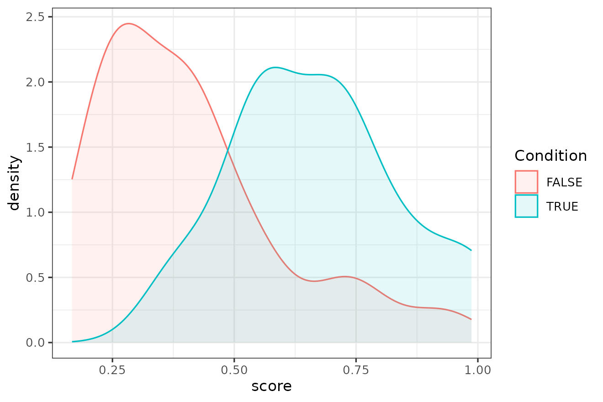

library(idiolect)
#> Loading required package: quanteda
#> Package version: 4.0.2
#> Unicode version: 14.0
#> ICU version: 70.1
#> Parallel computing: disabled
#> See https://quanteda.io for tutorials and examples.idiolect is a package that depends on
quanteda for all the main Natural Language Processing
functions. Although the basic object types and functions are described
in detail in the documentation of this package, familiarity with
quanteda is highly recommended. More information about
quanteda can be found on its website.
Introduction
Authorship Analysis is defined as the task of determining the likelihood that a certain candidate is the author of a certain set of questioned or disputed texts. We call Forensic Authorship Analysis a task of this kind applied in a real forensic case. In such settings, the disputed texts could be anonymous malicious documents, such as a threatening letter, but could also be text messages, emails, or any other document that, for various reasons, becomes evidence in a forensic case. In Forensic Linguistics, typically a set of disputed or questioned text is indicated as , while a set of texts of known origin, for example the texts written by the candidate author and collected as comparison material, is labelled using . In addition to these two datasets, the analysis also necessitates of a comparison reference corpus that we call . In a classic case involving a closed set of suspects, the texts written by the suspects minus the candidate form . In Authorship Verification cases that only involve one candidate author, then the reference dataset might have to be compiled by the analyst for the specific case (Ishihara et al. 2024).
A crucial difference between Authorship Analysis and Forensic Authorship Analysis is that whereas the former can be treated as a classification task where the final answer is binary (‘candidate is the author’ vs. ‘candidate is NOT the author’), the latter needs an expression of likelihood for the two competing propositions or hypotheses, the Prosecution Hypothesis vs. the Defence Hypothesis , for example:
: The author of and the author of are two different individuals.
The job of the forensic linguist in a forensic context is to analyse the linguistic evidence and determine which hypothesis it supports and with what degree of strength, thus aiding the trier-of-fact in reaching a conclusion. The role of the forensic linguist is therefore not to provide a YES/NO answer but rather to express the strength of the evidence in favour of each of these two hypotheses.
Given , and , the workflow for this analysis involves four steps:
- Preparation: This step involves any pre-processing step that is necessary for the analysis with the chosen method;
- Validation: Carry out an analysis on the case data or on a separate dataset that has been designed to be similar to the case material in order to validate the method for this particular case;
- Analysis: Carry out the analysis on the real , , and ;
- Calibration: Turn the output of (3) into a Likelihood Ratio that expresses the strength of the evidence given the two competing hypotheses.
Preparation
idiolect has a function to import texts into
R called create_corpus(). This function is
simply calling readtext (therefore this package must be
installed) while scanning the name of the files for the metadata of each
text, specifically the name of the author and the name of the file. The
syntax to follow to name the files is
Assuming that a folder of plain text files with names according to
this syntax are ready on the user’s computer, then the following command
(not executed here) loads the folder as a quanteda corpus
object with the metadata as docvars.
corpus <- create_corpus("path/to/folder")In this vignette, instead, the workflow is demonstrated using a small
dataset of the Enron corpus that is included in this package (see
?enron.sample).
corpus <- enron.sampleThis corpus is a quanteda corpus object that contains
ten authors with approximately the same amount of data.
Content masking
A highly recommended and sometimes necessary pre-processing step is content masking. This step consists in masking or removing words or other tokens in the text that are likely to create noise for an authorship analysis. Hiding content not only avoids incorrectly attributing a text based on the correlation between topics and authors (Bischoff et al., n.d.) but also tends to improve the performance of authorship analysis methods in cross-topic and cross-genre situations (Stamatatos 2017).
Three content masking methods are implemented in
idiolect: (1) the POSnoise algorithm developed by
Halvani and Graner (2021); (2) the
frame n-grams approach introduced by Nini (2023); and (3) an implementation of the
TextDistortion approach originally introduced by Stamatatos (2017). These options are available
in the contentmask() function. Because this function
depends on spacyr
and this requires downloading a parsing model for a language for the
automatic tagging of Parts of Speech (e.g. nouns, adjectives, adverbs),
this function is not run in this vignette. Instead, the Enron sample has
already been content-masked using POSnoise, as can be seen from
the preview of the corpus
corpus
#> Corpus consisting of 49 documents and 1 docvar.
#> known [Kh Mail_1].txt :
#> "N N N N wants to be N when he V up likes N P , N for doing t..."
#>
#> known [Kh Mail_3].txt :
#> "i 've V a J one , but the only N N N i have is on a N N from..."
#>
#> known [Kh Mail_4].txt :
#> "this was J towards the N of a J N N N . in N , P P helped th..."
#>
#> known [Kh Mail_5].txt :
#> "V the N for more than D N may get you V . a N N with a N and..."
#>
#> unknown [Kh Mail_2].txt :
#> "P , here 's the J N on our P P N V to V the V needs of the P..."
#>
#> unknown [Kw Mail_3].txt :
#> "they also have J N at the J N of P D per N and only a D J ea..."
#>
#> [ reached max_ndoc ... 43 more documents ]The POSnoise algorithm essentially replaces all words that tend to contain meaning (nouns, verbs, adjectives, adverbs) with their Part of Speech tag (N, V, J, B) while all the other words or tokens are left unchanged. In addition to this operation, POSnoise contains a white list of content words that mostly tend to be functional in English, such as verbs like do, have, make or adverbs such as consequently, therefore.
The following code should be used to run the
contentmask() function. This will require installing and
initiating a spacy parsing model
for the language chosen. This process should happen automatically
posnoised.corpus <- contentmask(corpus, model = "en_core_web_sm", algorithm = "POSnoise")Data labelling
In this example it is simulated that the first text written by the author Kw is the real text (the one labelled as ‘unknown’) and all the other known texts written by Kw (labelled as ‘known’) are therefore the set of known texts . The remaining texts from the other authors are the reference samples .
Q <- corpus_subset(corpus, author == "Kw")[1]
K <- corpus_subset(corpus, author == "Kw")[2:5]
R <- corpus_subset(corpus, author != "Kw")Vectorisation
Before applying certain authorship analysis methods, each text or
sample must be turned into a numerical representation called a
feature vector, a process typically referred to as
vectorisation. idiolect has a function to
vectorise a corpus called vectorize(). The features
normally used by many authorship analysis methods are
-grams
of words and punctuation marks or characters. For example, the
text can be vectorised into the relative frequencies of its words using
this code.
vectorize(Q, tokens = "word", remove_punct = F, remove_symbols = T, remove_numbers = T,
lowercase = T, n = 1, weighting = "rel", trim = F) |>
print(max_nfeat = 3)
#> Document-feature matrix of: 1 document, 136 features (0.00% sparse) and 1 docvar.
#> features
#> docs they also have
#> unknown [Kw Mail_3].txt 0.00289296 0.009643202 0.0192864
#> [ reached max_nfeat ... 133 more features ]or, as the most frequent 1,000 character 4-grams relative frequencies, for example, using
vectorize(Q, tokens = "character", remove_punct = F, remove_symbols = T, remove_numbers = T,
lowercase = T, n = 4, weighting = "rel", trim = T, threshold = 1000) |>
print(max_nfeat = 3)
#> Document-feature matrix of: 1 document, 1,094 features (0.00% sparse) and 1 docvar.
#> features
#> docs they hey ey a
#> unknown [Kw Mail_3].txt 0.0009771987 0.0009771987 0.0003257329
#> [ reached max_nfeat ... 1,091 more features ]The output of the function is a quanteda
document-feature matrix (or dfm) that can efficiently
store even very large matrices.
This vectorize() function is mostly designed for expert
users because different choices in the parameters of the vectorisation
can be made using each single authorship analysis method function. In
addition, since most authorship analysis methods already have a default
setting of these parameters, these are already the default for the
authorship analysis functions.
This step is therefore not necessary unless there are specific requirements as any vectorisation is handled by the functions that apply the authorship analysis methods.
Validation
The first step of the validation is to remove the real text. This is the actual forensic sample to analyse and it must be therefore removed when validating the analysis. The validation set is therefore made up of only the and datasets
validation <- K + RThis dataset can now be re-divided into ‘fake’
texts and ‘fake’
texts. Each text in this corpus is labelled as ‘unknown’ or ‘known’ so
two new disjoint datasets, validation.Q and
validation.K can be created by selecting the texts based on
this label.
validation.Q <- corpus_subset(validation, grepl("^unknown", docnames(validation)))
validation.K <- corpus_subset(validation, grepl("^known", docnames(validation)))This is not the only way in which a validation analysis can be conducted. For example, one could adopt a leave-one-out approach by taking each single text and treat it as a and then run an authorship analysis method for each one of them. Alternatively, a completely different dataset that is similar to the case data could be used. This simpler approach is more suitable for this small example.
Authorship analysis
The analysis that is being validated is the same analysis that will be applied to the text. Therefore, a choice of method has to be made depending on the right choice to analyse . In this example, the scenario simulated is a verification: was the unknown text written by the author, Kw? For this reason, the method chosen is one of the most successful authorship verification methods available today, the Impostors Method (Koppel and Winter 2014), and in particular one of its latest variants called the Rank-Based Impostors Method (Potha and Stamatatos 2017, 2020).
This analysis can be run in idiolect using the function
impostors() and then selecting the default parameter for
the algorithm argument, “RBI”. The main argument of
this function are the q.data, which is the set of
texts to test, and the k.data, which is the set of
texts from one or more authors that are going to be tested, and finally
the set of impostors data, cand.imps. For this example, the
impostors data is
set but generally the recommendation is to use another dataset when
possible.
The impostors() function accepts more than one author in
k.data and it also accepts the same dataset as input for both
k.data and cand.imps. When the same dataset is used,
impostors() will test each author in k.data and
use the texts written by other authors as impostors.
In contrast to other authorship analysis functions like
delta() and ngram_tracing(),
impostors() does not offer additional parameters to modify
the vectorisation process because all the Impostors Method algorithms
already have a well-specified default setting. If the user wants to
change that they should then vectorise the corpus separately using
vectorize() and then use the dfm as the input of
impostors().
The RBI variant of the method also requires setting a parameter called , which is the number of most similar impostors texts to sample from the wider set of impostors. The recommended setting is or but for simplicity this is set to in this example.
Because an analysis using the Impostors Method can have long run times, this function can also be parallelised using more than one core.
res <- impostors(validation.Q, validation.K, validation.K, algorithm = "RBI", k = 50)The output of impostors() is a data frame showing the
results of comparing each
author with each
text. The variable target is TRUE if the comparison is a
same-author one or FALSE if it is a different-author one. The variable
score contains the Impostors score, which is a value that
ranges from 0 to 1. Other authorship analysis functions return the same
data frame type with the same columns. The variable score
therefore represents different quantities depending on the analysis
function used (e.g. for delta(), this is the
coefficient, and so on).
res[1:10,]
#> K Q target score
#> 1 Kw unknown [Kh Mail_2].txt FALSE 0.404
#> 2 Kw unknown [Lc Mail_1].txt FALSE 0.243
#> 3 Kw unknown [Ld Mail_4].txt FALSE 0.752
#> 4 Kw unknown [Lt Mail_2].txt FALSE 0.215
#> 5 Kw unknown [Lk Mail_4].txt FALSE 0.306
#> 6 Kw unknown [Lb Mail_3].txt FALSE 0.975
#> 7 Kw unknown [La Mail_3].txt FALSE 0.262
#> 8 Kw unknown [Mf Mail_1].txt FALSE 0.933
#> 9 Kw unknown [Ml Mail_3].txt FALSE 0.846
#> 10 Kh unknown [Kh Mail_2].txt TRUE 0.555In order to assess the results of this validation analysis, the
function performance() can be used to return a series of
performance metrics. This function can take one or two result data
frames as input. If two are provided, then one is used as training and
the other one as test. If only one data frame is provided, then the
performance metrics are calculated using a leave-one-out approach.
The procedure followed by this function is to held out one text (if
leave-one-out, otherwise the test dataset in its entirety) and then use
the rest of the data (or the training dataset) as a calibration dataset
to calculate a Log-Likelihood Ratio
().
This analysis is done using the calibrate_LLR() function,
which fits a logistic regression model to calibrate the score into a
Ishihara (2021) using the ROC
library (Leeuwen 2015).
The output of the function is the following
p <- performance(res)
#> | | | 0% | |= | 1% | |== | 2% | |== | 3% | |=== | 4% | |==== | 6% | |===== | 7% | |====== | 8% | |====== | 9% | |======= | 10% | |======== | 11% | |========= | 12% | |========= | 13% | |========== | 15% | |=========== | 16% | |============ | 17% | |============= | 18% | |============= | 19% | |============== | 20% | |=============== | 21% | |================ | 22% | |================= | 24% | |================= | 25% | |================== | 26% | |=================== | 27% | |==================== | 28% | |==================== | 29% | |===================== | 30% | |====================== | 31% | |======================= | 33% | |======================== | 34% | |======================== | 35% | |========================= | 36% | |========================== | 37% | |=========================== | 38% | |============================ | 39% | |============================ | 40% | |============================= | 42% | |============================== | 43% | |=============================== | 44% | |=============================== | 45% | |================================ | 46% | |================================= | 47% | |================================== | 48% | |=================================== | 49% | |=================================== | 51% | |==================================== | 52% | |===================================== | 53% | |====================================== | 54% | |======================================= | 55% | |======================================= | 56% | |======================================== | 57% | |========================================= | 58% | |========================================== | 60% | |========================================== | 61% | |=========================================== | 62% | |============================================ | 63% | |============================================= | 64% | |============================================== | 65% | |============================================== | 66% | |=============================================== | 67% | |================================================ | 69% | |================================================= | 70% | |================================================== | 71% | |================================================== | 72% | |=================================================== | 73% | |==================================================== | 74% | |===================================================== | 75% | |===================================================== | 76% | |====================================================== | 78% | |======================================================= | 79% | |======================================================== | 80% | |========================================================= | 81% | |========================================================= | 82% | |========================================================== | 83% | |=========================================================== | 84% | |============================================================ | 85% | |============================================================= | 87% | |============================================================= | 88% | |============================================================== | 89% | |=============================================================== | 90% | |================================================================ | 91% | |================================================================ | 92% | |================================================================= | 93% | |================================================================== | 94% | |=================================================================== | 96% | |==================================================================== | 97% | |==================================================================== | 98% | |===================================================================== | 99% | |======================================================================| 100%
p$evaluation
#> Cllr Cllr_min EER Mean TRUE LLR Mean FALSE LLR TRUE trials
#> 1 0.8043863 0.6155326 19.04762 0.413398 -0.3864078 11
#> FALSE trials AUC Balanced Accuracy Precision Recall F1 TP FN
#> 1 83 0.829904 0.845679 0.3333333 0.8888889 0.4848485 8 1
#> FP TN
#> 1 16 65The and coefficients are used to evaluate the performance of the (Ramos et al. 2013). These coefficients estimate the cost of the , where a value of 1 indicates no information in the and a lower coefficient suggests that there is information in the , with lower values of suggesting better performance. The other binary classification metrics returned, such as Precision, Recall, and F1, are all calculated using as the threshold for a TRUE (or same-author in this case) classification.
In the present example, a 0.804 suggests that there is enough information in the to be able to proceed with the actual forensic analysis. The , which is the component of measuring the amount of discrimination, is even lower, which means that there is a substantial difference in the two distributions. This is confirmed by the Area Under the Curve value of 0.83. Because of the large disparity between the TRUE and FALSE test cases, the values of Precision and F1 are misleading. The Balanced Accuracy value of 0.846, however, again suggests a substantial amount of discrimination at .
The results of the analysis can also be plotted using a density plot
for each of the two distributions, TRUE and FALSE. This can be done
using the density_plot() function
density_plot(res)
This plot shows the values of the score on the horizontal axis and the density for TRUE (red) vs. FALSE (blue) on the vertical axis.
These findings are evidence that the method is validated for this dataset and it is now possible to analyse the text and use these results to calibrate the for .
Analysis of
At this point the only thing left to do is to analyse the forensic
data by feeding the real
,
,
and
into the impostors() function using the same settings used
for the validation.
q.res <- impostors(Q, K, R, algorithm = "RBI", k = 50)Because there is only one text, the final table of results only contains one row
q.res
#> K Q target score
#> 1 Kw unknown [Kw Mail_3].txt TRUE 0.975Qualitative examination of evidence
Before reaching the conclusions, it is often important to inspect the features that the algorithm has considered for the analysis. In a forensic analysis, good knowledge of the data is important and best practice require the analyst to be very familiar with the dataset before running a computational analysis. Reading the data and being familiar with it can lead to the addition of more pre-processing steps to remove noise and can help the analyst spot any problem mistakenly introduced by the algorithm.
In addition to familiarise themselves with the data,
idiolect allows the analyst to explore the most important
feature considered by the authorship analysis method used. For example,
when using the RBI algorithm with impostors() then the
parameter features can be switched to TRUE to obtain a list of
important features. Running this again with this parameter switched on
produces the following results
q.res2 <- impostors(Q, K, R, algorithm = "RBI", k = 50, features = T)
strwrap(q.res2$features, width = 70)
#> [1] ", her|lso ,|so , |P P f|, i w|N N .| too |our P|ur P |also |re is|i"
#> [2] "jus|ll me|l me |ere i|st wa|P , h|u hav| yet | , he|ou ha|ust w|you"
#> [3] "h| also|rom P|om P |ve no|u and|he J |N N N|the J|V our| here|ve a"
#> [4] "|ith y|re al|few N|ew N | so i|ou an|e a N|P P i|P on |th yo| V my|V"
#> [5] "my |e N w| , so|me to| few |eithe|ither| him |V it | P on|out w|at i"
#> [6] "|t kno| may |P P V| N fr|u to |N fro|e is |V wit| V it|P for|, i h|"
#> [7] "is o|u nee|ou to| V wi|s for| P fo|a N a|do no|h you| P in|P in | B ,"
#> [8] "| J N | me t| 'll |you n|ou ne|o not|, N a|t to |n N .|N in |o be |ke"
#> [9] "a |n P ,| N or|N or | look|t wan|ave a| it .|ave n|o V i|r J N|e an"
#> [10] "|as i |P D .|e tha|is J |o V w|r N w| , i |N who|t V a|e N s|se le| N"
#> [11] "on|nd th|s you|ng th| is a|N N w|ase l| one | can |e hav| 's N|'s N |"
#> [12] "i wo|i was|in V |e let| at t|are a| our |t the|N on |i hav|is V | as"
#> [13] "i|e J N|you t| to m|P 's |P P o|ake a|e thi|s N N| a N |in a |n you|"
#> [14] "you |hat P|o see| week|week |r N o|nt to| N if|N if |or V |N for|ut i"
#> [15] "| N J |the N|he N | into|into |o hav| P 's|hat y|n our|if yo| N fo|to"
#> [16] "do|o do | is J|P P .| my N| N in|me N |t you| i ha| do n| get |an V"
#> [17] "|e N N|V tha| i am|e P P|you N|ant t| on P| is V| i V |ome N|ore"
#> [18] "N|ave b|other|with | a J |at yo| N i | we w| the |did n|thing|hing |e"
#> [19] "wil| J in|J in |on P |to me|o me |s the|ed to|or P |ve V |my N |to"
#> [20] "se| in a| but | , th| P , |t is | see |i wil|this |ou N |V thi|or N |"
#> [21] "have|is a |N has|J to |have |i V t|o V o| V a | V fo|ther |e V i|i am"
#> [22] "| J fo|J for|is N |a J N|V and|V on |as V |V for|N , h|can V|J N"
#> [23] "N|his N| J , |J N .| N th|f you|some | N wi| V an| with| be J|be J |d"
#> [24] "the|V to |V in |but i| star|start|ng on|g on |a N t| N wh| just|r"
#> [25] "you| V to|re N | this| in P|P to |ow if|w if |e you| for |to be| V N"
#> [26] "|P P P|and t|in P | work|our J|ur J | to b| P to| and |e als|r N i|ou"
#> [27] "wo|i 'll|ch of|o V .|ach o|r D N|ase V|se V |h of |o mak|e and|to"
#> [28] "ma|nning|e V y|o the|ill V|and g|y N N|o V u|P tha|look | out"
#> [29] "|ether|ve an| it t|t i w|ere w|o V y|ning |o J N| by N|e nee|t V i|,"
#> [30] "as |e to | if y|by N | we n|P , a| give| N P | , as|N we |just |e"
#> [31] "any|V you|we wo| N V | each|our N|ur N |each |ill h|pleas|lease|ease"
#> [32] "|you a|e wou|e in |for D|here | she |needs|eeds | P N |tart |d you|"
#> [33] "othe|for N| plea| both|your |ll V |eek .|make | , we|, we | V yo|or D"
#> [34] "|r N a|both |V any|a N f|worki|orkin|rking|N V N|re J | P V |n the|we"
#> [35] "ne|o V N|N N a|more | more|s to |ld li| afte| V on|s tha| P D | J"
#> [36] "to|in th|any N|ny N |P , w| me a|fter |V the|e V a|be V | be V| who |"
#> [37] "in t|give | , yo|, you| need|is th| call| did |at we| what|d to |V a"
#> [38] "N| any |d lik|after|at P |r N .| has | N we|her N| N , |s a N|ing a|N"
#> [39] "is | of N|of N |ou ar|u are| V in|would|P P a|ing o|of yo| two |you"
#> [40] "w|N N i| your|r N N|t thi|we ar| N is|N N ,| P is| is t|y N o| we V|"
#> [41] "a fe|a few|ke to|i wou|r our|uld l|th N |ike t|V P P|e J t|like |"
#> [42] "like|e if |ow wh| woul| N by|N by |e V f|ee if|for h|y hav|, ple| ,"
#> [43] "pl| a D |V N o| find|find |now w|hat h|ted t|you m|i nee|N , s|th P |"
#> [44] ", bu|, but|e V t|lso V|so V |ith P|eed t| to V|o V t|to V |to th|ill"
#> [45] "n| on t|ould | make| let |P and| per |f the|d P P| N yo|you s|V up |"
#> [46] "P ha|and h|s N w| P an|N you|or th|e N o|not V|V J N|nd N |ot V | to"
#> [47] "s|for t|er N |e bee|ve be|see i|and N| will|are V|n to |ne of|them |"
#> [48] "them|N tha|one o|me of|id no|d not|f N .|t wit|N so |o V a|to ta| N"
#> [49] "so|e J .|e of |ome o|king |m to |l hav| i wa| of y|ll ha|we ha|a N"
#> [50] "o|u V t|need | we '|, P ,| N ar|N are| was | to g|hat N| from|r the|"
#> [51] "N B |from | N N |it is|take |to P |at th| to P|e N .|e V .|he P |the"
#> [52] "P| V th"The RBI method uses as features character 4-grams and a list of these
features is clearly hard to interpret by a human analyst. Despite the
complexity, this is not an impossible task. idiolect offers
a function to aid exploration called concordance(), which
uses quanteda’s kwic() as its engine.
concordance() takes as input a string representing one
or more words (or punctuation marks). For example, the most important
character 4-gram seems to be <, her> so this could be the
search target.
concordance(Q, K, R, search = ", her", token.type = "character") |>
dplyr::select(pre, node, post, authorship)
#> pre node post authorship
#> 1 . P , her e is Q
#> 2 we V , her e is Q
#> 3 . P , her e is Q
#> 4 ur N , her e is K
#> 5 . P , her e is K
#> 6 . P , her e is K
#> 7 nd P , her e is K
#> 8 . P , her e is K
#> 9 N N , her e is K
#> 10 st P , her e is K
#> 11 N N , her e is K
#> 12 P , her e 's Reference
#> 13 P P , her e out Reference
#> 14 nd P , her e is Reference
#> 15 . P , her e are Reference
#> 16 . P , her e are ReferenceThe search reveals that this character sequence is a strong characteristic of the candidate author’s writing. However, the real underlying pattern is not the use of a comma followed by the possessive determiner her but the token sequence [, here is], which is only used by the candidate author and one other author in the reference corpus.
concordance(Q, K, R, search = ", here is", token.type = "word") |>
dplyr::select(pre, node, post, authorship)
#> pre node post authorship
#> 1 each of you . P , here is the P P P on Q
#> 2 on this N we V , here is a N N of both Q
#> 3 N for P . P , here is the P P P P Q
#> 4 all . per your N , here is some J N on P K
#> 5 B and V . P , here is the J N N on K
#> 6 N V N . P , here is the P P P P K
#> 7 N . P and P , here is the J for the P K
#> 8 N N yet . P , here is the P P P P K
#> 9 out of the N N , here is the beginning of the N K
#> 10 N on this past P , here is the N we talked about K
#> 11 as per our N N , here is the V P P P K
#> 12 know . P and P , here is a N of N in ReferenceAnother important feature is represented by the two character 4-grams, <lso ,> and <so , >, which are likely to refer to the token sequence [also ,].
concordance(Q, K, R, search = "lso ,", token.type = "character") |>
dplyr::select(pre, node, post, authorship)
#> pre node post authorship
#> 1 N ? a lso , ther Q
#> 2 V . a lso , i ha Q
#> 3 P . a lso , plea Q
#> 4 k . a lso , P ha Q
#> 5 N . a lso , P P K
#> 6 N . a lso , at t K
#> 7 N ? a lso , i 'v K
#> 8 s . a lso , let K
#> 9 a lso , V th K
#> 10 N . a lso , i V K
#> 11 N . a lso , woul Reference
#> 12 . P a lso , V to Reference
#> 13 N . a lso , any Reference
#> 14 N . a lso , have Reference
#> 15 P . a lso , P P Reference
#> 16 N . a lso , you Reference
#> 17 D . a lso , to V Reference
#> 18 N . a lso , tell Reference
#> 19 J . a lso , coul Reference
#> 20 N . a lso , we n Reference
#> 21 J . a lso , ther ReferenceThis is correct and it is referring to the use of also at the beginning of a sentence and immediately followed by a comma.
Although searching all the features returned is clearly a significant
amount of work, by inspecting the list of features carefully and by
using concordance() to explore the features in the data the
analyst can spot patterns or mistakes in the analysis (Ypma, Ramos, and Meuwly 2023).
Conclusions
Although the score assigned to is high, depending on the calibration data, it can correspond to various magnitudes of the .
The
value for
can also be plotted onto the TRUE vs. FALSE distributions using the
second argument of density_plot(). The q argument
can be used to draw a black vertical line that crosses the two
distributions at the horizontal axis corresponding to the score of
.
density_plot(res, q = q.res$score)To perform this calibration the calibrate_LLR() function
is used again by using the validation results as calibration data
q.llr <- calibrate_LLR(res, q.res, latex = T)
q.llr$`Verbal label`
#> [1] "Moderate support for $H_p$"
strwrap(q.llr$Interpretation)
#> [1] "The similarity is 27.04 times more likely to be observed in the case of"
#> [2] "$H_p$ than in the case of $H_d$"This function not only returns the value but also the verbal labels and their interpretation (Marquis et al. 2016).
The final conclusion of the analysis is therefore the following:
The similarity score of given is 0.975, which corresponds to 1.432. The similarity is 27.04 times more likely to be observed in the case of than in the case of . Therefore, the linguistic analysis offers Moderate support for .
This conclusion can be complemented with an explanation of the
implication of these results for the trier of facts by showing a table
of posterior probabilities assuming a range of prior probabilities. This
can be done with the posterior() function by inserting as
input the value of the
posterior(q.llr$LLR) |>
dplyr::select(prosecution_prior_probs, prosecution_post_probs)
#> # A tibble: 11 × 2
#> prosecution_prior_probs prosecution_post_probs
#> <dbl> <dbl>
#> 1 0.000001 0.0000270
#> 2 0.01 0.215
#> 3 0.1 0.750
#> 4 0.2 0.871
#> 5 0.3 0.921
#> 6 0.4 0.947
#> 7 0.5 0.964
#> 8 0.6 0.976
#> 9 0.7 0.984
#> 10 0.8 0.991
#> 11 0.9 0.996The table above reveals that, assuming a prior probability for of 0.00001 (roughly, one out of the population of Manchester), then this would transform this probability to a posterior probability for of 0.000027. In other words, it would not make much substantial difference for the trial.
However, if the prior probability of was 0.5, then these results would turn it to 0.96, which is a substantial change.
The table shows that the present evidence could change the probability that is true to equal or higher than 0.9 only with a prior greater than 0.2.
Acknowledgements
I would like to thank Shunichi Ishihara and Marie Bojsen-Møller for helpful comments on the first draft of this vignette.